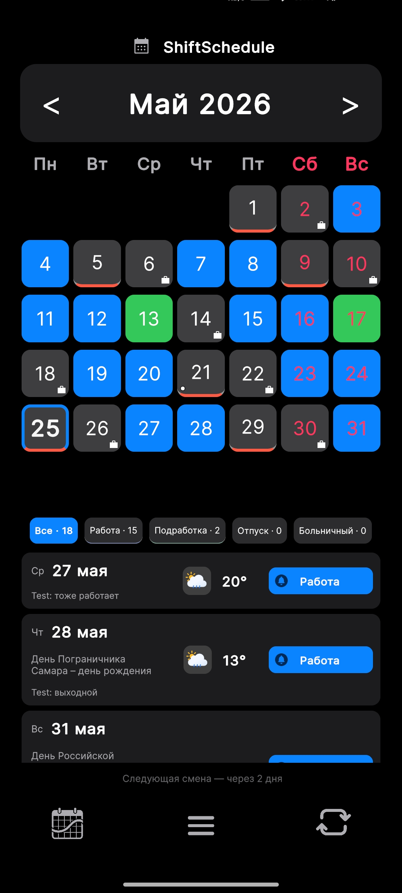

Когда оба человека работают посменно, планировать совместное время становится сложнее. У одного график 2/2, у другого 3/3. Один работает днём, другой выходит в ночь. У кого-то отпуск, больничный или подработка. В итоге даже простой вопрос «когда мы оба свободны?» приходится считать вручную по календарю.
ShiftSchedule помогает решить эту проблему: приложение показывает не только ваш график смен, но и помогает синхронизировать расписание с партнёром. Так проще заранее увидеть общие выходные, выбрать день для поездки, встречи, семейных дел или просто отдыха вместе.

Зачем нужен общий календарь смен
Обычный календарь показывает даты, но не учитывает особенности сменной работы. Если у пары разные графики, приходится постоянно сверяться:
- кто работает завтра;
- когда совпадают выходные;
- не попадает ли поездка на рабочую смену;
- есть ли общий свободный день на неделе;
- не изменилось ли расписание после отпуска, больничного или подработки.
В ShiftSchedule это можно смотреть прямо в приложении. Не нужно держать всё в голове, пересылать друг другу скриншоты и вручную сравнивать два календаря.
Дополнительно в приложении есть синхронизация с календарём устройства. Если вам привычнее видеть смены в обычном календаре телефона, можно включить синхронизацию и использовать удобный для себя формат. Поддерживается как передача смен из приложения в календарь, так и расширенный режим обмена данными. При отключении функции данные убираются аккуратно, без лишнего засорения календаря.
Как работает синхронизация с партнёром
Чтобы подключить партнёра, нужен аккаунт. Войти можно через:
- почту;
- Яндекс;
- Google.
Аккаунт нужен не только для партнёрского режима, но и для надёжного хранения данных. Это удобно, если вы меняете телефон, переустанавливаете приложение или просто хотите быть уверены, что расписание, настройки и другие данные можно безопасно восстановить из облака.
После регистрации новым пользователям доступно 14 дней PRO бесплатно, чтобы спокойно попробовать синхронизацию с партнёром и другие расширенные возможности приложения.
У каждого пользователя есть свой уникальный код. Его можно найти в приложении:
Код состоит из 6 символов, например:
Как подключить партнёра
Подключение сделано максимально просто.
Партнёр открывает приложение, переходит в раздел «Партнёры», нажимает кнопку «Добавить» и вводит ваш код. После этого связь устанавливается.
Для двусторонней синхронизации каждый пользователь добавляет код второго. То есть вы добавляете код партнёра, а партнёр добавляет ваш код. После этого оба могут видеть данные друг друга в рамках партнёрского режима.
При добавлении партнёра можно по желанию указать никнейм или имя — это не обязательно, но так удобнее, если вы хотите сразу понимать, кто именно подключён. Также при добавлении можно выбрать один из трёх цветов подсветки, чтобы общие выходные было проще различать визуально.

Какие данные синхронизируются
Через облако синхронизируются данные, связанные с вашим расписанием: рабочие и выходные дни, изменения в графике, отпуска, больничные, подработки, заметки и другие данные, которые важны для актуального отображения календаря.
Это удобно, потому что партнёр видит не только базовый шаблон графика, а именно ваши актуальные изменения. Если вы что-то поправили в расписании, отметили отпуск, больничный или другой особый день, после синхронизации это может отобразиться и у партнёра.
Что видно в календаре
В ShiftSchedule общие выходные отмечаются цветной полоской в нижней части дня. Цвет зависит от того, какой вариант вы выбрали для конкретного партнёра при подключении.
Это помогает быстро увидеть, где у вас совпадают свободные дни, не сравнивая графики вручную. Такой формат особенно удобен, если у вас разные режимы работы:
- 2/2 и 5/2;
- 3/3 и день/ночь;
- сутки через трое;
- вторая работа;
- подработки;
- плавающие выходные.
Вместо постоянных переписок и сравнения календарей вы просто открываете приложение и сразу видите, где есть общие свободные дни.

Вкладка «Вместе»
Сейчас партнёрский режим уже помогает видеть общие дни и ориентироваться в расписании. Также ведётся разработка отдельной вкладки «Вместе».
В будущем это будет отдельный удобный раздел, где можно будет смотреть именно совместные выходные, не отвлекаясь на лишние данные. Такая вкладка должна сделать планирование ещё проще: открыл — и сразу видно, когда вы оба свободны.
Как обновляется расписание
Когда приложение открыто, данные партнёра обновляются автоматически, поэтому изменения со временем подтягиваются без лишних действий.
Если нужно отправить свои изменения сразу, можно сделать это вручную:
Это полезно, если вы только что внесли изменения и хотите, чтобы они быстрее ушли в облако.
Как обновить код
Если ваш код случайно попал к посторонним или вы просто хотите его заменить, в разделе партнёров есть кнопка «Обновить». Она используется именно для обновления кода.
Чтобы код не сменился случайно, действие подтверждается в два шага: сначала приложение уточняет действие, затем нужно повторно нажать кнопку «Обновить».
После этого старый код перестаёт работать, и партнёрам нужно будет ввести новый код заново.
Кому подойдёт эта функция
Партнёрская синхронизация особенно полезна, если:
- вы с партнёром работаете по разным сменным графикам;
- у одного график 2/2, 3/3, день/ночь или сутки через трое;
- нужно быстро находить общие выходные;
- вы хотите планировать поездки, встречи и семейные дела заранее;
- в расписании есть отпуска, больничные, подработки и другие изменения;
- важно не потерять данные и иметь возможность восстановить их из облака.
Почему это удобнее обычного календаря
Обычный календарь не всегда подходит для сменной работы. Он не понимает циклы 2/2, 3/3, день/ночь или сутки через трое. А если графиков два, задача становится ещё сложнее.
ShiftSchedule создан именно для сменных расписаний. Приложение помогает вести свой график, учитывать изменения, использовать заметки, смотреть дополнительные данные по дням и синхронизировать расписание с партнёром.
Главный плюс простой: приложение помогает быстро ответить на практический вопрос:
«Когда мы оба отдыхаем?»
ShiftSchedule — бесплатно для Android
Настройте любой сменный график за минуту. Синхронизация с партнёром, будильники, заметки, голосовое управление через Алису.
Скачать в RuStore APK напрямую